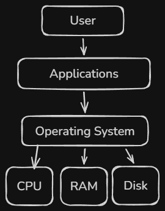

An Operating System (OS) is the part of a computer system that allows users to access their files, run applications, and interact with the computer with relative ease. It provides a graphical user interface (GUI), including a desktop that users can populate with shortcuts to their favorite programs and a file explorer that organizes files and folders. Through simple actions such as double-clicking to open a file or clicking and dragging to move folders, the operating system makes managing data both intuitive and efficient.
However, there is much more to an operating system than its user interface. Behind the scenes, the OS serves as the bridge between a computer's hardware and its software. It manages memory, allocates system resources to running programs, schedules processor time among competing tasks, and coordinates communication between hardware components and applications. At any given moment, thousands—or even millions—of operations are taking place, most of which occur without the user's knowledge. The operating system ensures these operations are carried out efficiently, allowing the computer to remain responsive and reliable while multiple programs run simultaneously.
The following pages explore three of the operating system's most important responsibilities: process management, memory management, and file systems.